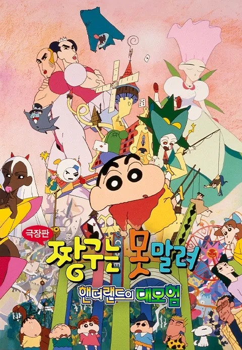

쌓인 기록 52편

| Release | 1996.00.00 |
|---|---|
| Runtime | 97분 |
| Age Rating | 전체 관람가 |
| Director | 혼고 미즈루 |
| Cast | 야지마 아키코, 나라하시 미키, 후지와라 케이지 |
| Date | |
|---|---|
| Time | |
| Theater | |
| Screen |
| Release | 2023.04.14 |
|---|---|
| Runtime | 107분 |
| Age Rating | 15세 이상 관람가 |
| Director | 이원석 |
| Cast | 이하늬, 이선균, 공명 |
| Date | |
|---|---|
| Time | |
| Theater | |
| Screen |
| Release | 2017.02.28 |
|---|---|
| Runtime | 90분 |
| Age Rating | 12세 이상 관람가 |
| Director | 신카이 마코토 |
| Cast | 하기와라 마사토, 난리 유카, 요시오카 히데타카 |
| Date | |
|---|---|
| Time | |
| Theater | |
| Screen |